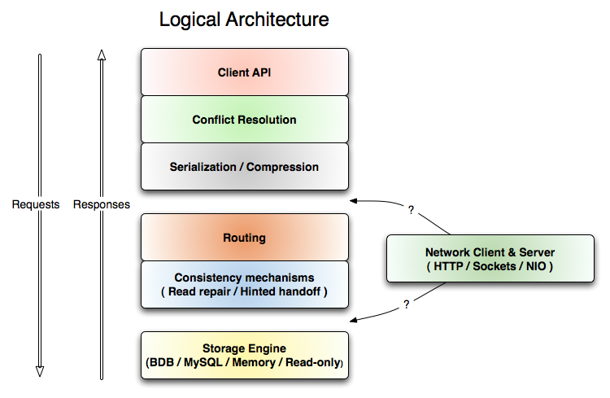

To enable high performance and availability we allow only very simple key-value data access. Both keys and values can be complex compound objects including lists or maps, but none-the-less the only supported queries are effectively the following:
value = store.get(key) store.put(key, value) store.delete(key)
This is by no means good enough for all storage problems, there are a variety of trade-offs:
More discussion of the details of the data model will be given below.
Each layer in the code implements a simple storage interface that does put, get, and delete. Each of these layers is responsible for performing one function such as tcp/ip network communication, serialization, version reconciliation, inter-node routing, etc. For example the routing layer is responsible for taking an operation, say a PUT, and delegating it to all the N storage replicas in parallel, while handling any failures.
Keeping each of these layers separate means that they can be mixed and matched at runtime to meet different needs. For example, we can add in a compression layer that compresses byte values at any level below the serialization level. Likewise we have flexibility on where the intelligent routing of data to partitions is done. This can be done on the client side for "smart" clients, or can be done on the server side to enable dumb, hardware load-balanced http clients (say written in Ruby). Which we do is simply a matter of if the network layer sits above or below the routing layer.

In the above diagram "Load Bal." indicates a hardware loadbalancer or round-robin software load balancer and "Partition-aware routing" is the storage systems internal routing. Obviously fewer hops is nice from a latency perspective (since, well, there are fewer hops), nice from a throughput perspective (since there are fewer potential bottlenecks), but requires the routing intelligence to move up the stack (e.g. the client must be java and use our library). In the final, right-most picture the http-rpc requests to the service are being routed to machines that contain the right data (when possible), so that in the simple case of a single replicated read the machine need can fetch directly from the local, in-process bdb.
This flexibility makes high performance configurations possible. Disk access is the single biggest performance hit in storage, the second is network hops. Disk access can be avoided by partitioning the data set and caching as much as possible. Network hops require architectural flexibility to eliminate. Note that in the diagram above we can implement 3-hop, 2-hop, and 1-hop remote services using different configurations. This enables very high performance to be achieved when it is possible to route service calls directly to the appropriate server.
Data needs to be partitioned across a cluster of servers so that no single server needs to hold the complete data set. Even when the data can fit on a single disk, disk access for small values is dominated by seek time so partitioning has the effect of improving cache efficiency by splitting the "hot" set of data into smaller chunks which can (hopefully) be entirely in memory on the server that stores that partition. This means that servers in the cluster are not interchangeable, and requests need to be routed to a server that holds requested data, not just to any available server at random.
Likewise servers regularly fail, become overloaded, or are brought down for maintenance. If there are S servers and each server is assumed to fail independently with probability p in a given day, then the probability of losing at least one server in a day will be 1 - (1 - p)s. Clearly, given this fact, we cannot store data on only one server or the probability of data loss will be inversely proportional to cluster size.
The simplest possible way to accomplish this would be to cut the data into S partitions (one per server) and store copies of a given key K on R servers. One way to associate the R servers with key K would be to take a = K mod S and store the value on servers a, a+1, ..., a+r. So for any probability p you can pick an appropriate replication factor R to achieve an acceptably low probability of data loss.
This system has the nice property that anyone can calculate the location of a value just by knowing its key, which allows us to do look-ups in a peer-to-peer fashion without contact a central metadata server that has a mapping of all keys to servers.
The downside to the above approach occurs when a server is added, or removed from the cluster (say because we have purchased new hardware or a server is temporarily down). In this case d may change and all data will shift between servers. Event if d does not change load will not evenly distribute from a single removed/failed server to the rest of the cluster.
Consistent hashingis a technique that avoids these problems, and we use it to compute the location of each key on the cluster. Using this technique voldemort has the property that when a server fails load will distribute equally over all remaining servers in the cluster. Likewise when a new server is added to a cluster of S servers, only 1/(S+1) values must be moved to the new machine.
To visualize the consistent hashing method we can see the possible integer hash values as a ring beginning with 0 and circling around to 2^31-1. This ring is divided into Q equally-sized partitions with Q >> S, and each of the S servers is assigned Q/S of these. A key is mapped onto the ring using an arbitrary hash function, and then we compute a list of R servers responsible for this key by taking the first R unique nodes when moving over the partitions in a clockwise direction. The diagram below pictures a hash ring for servers A,B,C,D. The arrows indicate keys mapped onto the hash ring and the resulting list of servers that will store the value for that key if R=3.
In a relational database data is broken into 2D tables. The equivalent here is a "store", we don't use the word table since the data is not necessarily tabular (a value can contain lists and mappings which are not considered in a strict relational mapping). Each key is unique to a store, and each key can have at most one value.
Voldemort supports hashtable semantics, so a single value can be modified at a time and retrieval is by primary key. This makes distribution across machines particularly easy since everything can be split by the primary key.
Note that although we don't support one-many relations, we do support lists as values which accomplishes the same thing--so it is possible to store a reasonable number of values associated with a single key. This corresponds to a java.util.Map where the value is a java.util.List. In most cases this denormalization is a huge performance improvement since there is only a single set of disk seeks; but for very large one-to-many relationships (say where a key maps to tens of millions of values) which must be kept on the server and streamed lazily via a cursor this approach is not practical. This (rare) case must be broken up into sub-queries or otherwise handled at the application level.
The simplicity of the queries can be an advantage, since each has very predictable performance, it is easy to break down the performance of a service into the number of storage operations it performs and quickly estimate the load. In contrast SQL queries are often opaque, and execution plans can be data dependent, so it can be very difficult to estimate whether a given query will perform well with realistic data under load (especially for a new feature which has neither data nor load).
Also, having a three operation interface makes it possible to transparently mock out the entire storage layer and unit test using a mock-storage implementation that is little more than a HashMap. This makes unit testing outside of a particular container or environment much more practical.
Serialization in Voldemort is pluggable so you can use one of the baked in serializers or easily write your own. At the lowest level the data format for Voldemort is just arrays of bytes for both keys and values. Higher-level data formats are a configuration option that are set for each Store--any format can be supported by implementing a Serializer class that handles the translation between bytes and objects. Doing this ensures the client serializes the bytes correctly.
The following types are supported out of the box by entering the appropriate type in the store configuration:
String and identity serialization are pretty self-explanatory. Documentation / Tutorial for the other serialization formats can easily be found on the internet. So the rest of this section describes the motivation behind the json type.
There are three states that data may reside in, and we want to be able to translate between all of them:
SQL basically standardizes around the text query format and programs handle the mapping between these strings and the internal data structures the program uses. This is the classic object-relational mapping problem.
JSON is an excellent data model for storage because it supports the common types that are used in all programming languages (strings, numbers, lists/arrays, and objects/hashtables); the problem is that it is inherently schema-less. The most common use case for any storage problem is to have N rows all with the exact same format (i.e. containing the same columns), in this case JSON is wasteful since it stores the data format with each row. Likewise we want to be able to check assertions about the form of the data to avoid allowing misspelling a column to store corrupt data. To avoid this, we should be able to assign a schema to both the key and value of each store that describes what is allowable to store there and how to translate it to and from bytes. The schema can itself be specified in JSON as well, using the following types:
int8, int16, int32, int64, float32, float64, string, date, object, bytes, boolean, object, array
For example if I expect a store to contain strings then I can specify the type of that table as
"string"
Note that this type definition is itself valid JSON
The java code that fetches data will then return a String
If I expect the store to contain a list of integers, say, member ids, I can specify the type as
["int32"]
The java code will then return a List<Integer>.
If I expect the store to contain a simple user object I could define the type as
{"fname":"string", "lname":"string", "id":"int32", "emails":["string"]}
Here the Java code will return a Map<String,Object> containing each of the given keys, and the associated value.
Here is a complete list of allowed types:
| type | storable substyles | bytes used | Java type | example JSON | example type definition |
|---|---|---|---|---|---|
| number | int8, int16, int32, int64, float32, float64, date | 8, 16, 32, 64, 32, 64, 32 | Byte, Short, Integer, Long Float, Double, Date | 1 | "int32" |
| string | string, bytes | 2 + length of string or bytes | String, byte[] | "hello" | "string" |
| boolean | boolean | 1 | Boolean | true | "boolean" |
| object | object | 1 + size of contents | Map<String,Object> | {"key1": 1, "key2":"2", "key3":false} | {"name":"string", "height":"int16"} |
| array | array | size * sizeof(type) | List<?> | [1, 2, 3] | ["int32"] |
In this sense the type definition is a set of restrictions on standard json that make serialization efficient (by striping out repeated fields and storing numbers compactly) and allow for basic data correctness checks.
Note that even though a value may have all of these different fields we only support queries by the store's defined key.
To help with schema evolution this JSON implementation includes the ability to version the schema to allow gradual migration of the data. Data will always be written using the most recent schema but will always be read using whatever schema was used to write it. This allows schema migration to take place without bringing down the service that gets the data.
When taking multiple simultaneous writes distributed across multiple servers (and perhaps multiple data centers) consistency of data becomes a difficult problem. The traditional solution to this problem is distributed transactions but these are both slow (due to many round trips) and fragile as they require all servers to be available to process a transaction. In particular any algorithm which must talk to > 50% of servers to ensure consistency becomes quite problematic if the application is running in multiple data centers and hence the latency for cross-data-center operations will be extremely high.
An alternate solution is to tolerate the possibility of inconsistency, and resolve inconsistencies at read time. That is the approach taken here.
Applications usually do a read-modify-update sequence when modifying data. For example if a user adds an email address to their account we might load the user object, add the email, and then write the new values back to the db. Transactions in databases are a solution to this problem, but are not a real option when the transaction must span multiple page loads (which may or may not complete, and which can complete on any particular time frame)
The value for a given key is consistent if, in the absence of updates, all reads of that key return the same value. In the read-only world data is created in a consistent way and not changed. When we add both writes, and replication, we encounter problems: now we need to update multiple values on multiple machines and leave things in a consistent state. In the presence of server failures this is very hard, in the presence of network partitions it is provably impossible (a partition is when, e.g., A and B can reach each other and C and D can reach each other, but A and B can't reach C and D).
There are several methods for reaching consistency with different guarantees and performance tradeoffs.
We use versioning and read-repair. This has a the best availability guarantees, and the highest efficiency (only W writes network roundtrips are required for N replicas where W can be configured to be less than N). 2PC typically requires 2N blocking roundtrips. Paxos variations vary quite a bit but are comparable to 2PC.
Another approach to reach consistency is by using Hinted Handoff. In this method during writes if we find that the destination nodes are down we store a "hint" of the updated value on one of the alive nodes. Then when these down nodes come back up the "hints" are pushed to them thereby making the data consistent. Many of the specifics are borrowed from the Amazon paper below
Here are some good write-ups on this subject:
A simple versioning system is just optimistic locking—we store a unique counter or "clock" value with each piece of data and only allow updates when the update specifies the correct clock value.
This works well in a centralized database, but falls down in a distributed system where servers appear and disappear and replication may take time. For this usage a single value will not contain enough of the write history to allow us to throw away old versions. Consider the following sequence of actions:
# two servers simultaneously fetch the same value
[client 1] get(1234) => {"name":"jay", "email":"jay.kreps@linkedin.com"}
[client 2] get(1234) => {"name":"jay", "email":"jay.kreps@linkedin.com"}
# client 1 modifies the name and does a put
[client 1] put(1234, {"name":"jay kreps", "email":"jay.kreps@linkedin.com"})
# client 2 modifies the email and does a put
[client 2] put(1234, {"name":"jay", "email":"jay.kreps@yahoo.com"})
# We now have the following conflicting versions:
{"name":"jay", "email":"jay.kreps@linkedin.com"}
{"name":"jay kreps", "email":"jay.kreps@linkedin.com"}
{"name":"jay", "email":"jay.kreps@yahoo.com"}
In this model the latter two writes make the original value irrelevant (since they happen after the original). However there is no rule which will tell the server that it can throw away either the change to email or the change to name. So we want a versioning system that allows us to detect overwrites and throw away the old version, but also allows us to detect conflicts and let the client reconcile these.
One answer to this is a so-called vector-clock version. A vector clock keeps a counter for each writing server, and allows us to calculate when two versions are in conflict, and when one version succeeds or preceeds another.
A vector clock is a list of server:version pairs:
[1:45,2:3,5:55]
The version indicates that the server was the "master" for that number of writes.
A version v1 succeeds a version v2 if for all i, v1i > v2i. If neither v1 > v2 nor v1 < v2, then v1 and v2 co-occur, and are in conflict. Here is a simple example of two conflicting versions:
[1:2,2:1] [1:1,2:2]So our versioning scheme defines a partial orderover values where simple optimistic locking schemes define a total order.
Any persistent system needs to answer the question "where is my stuff?". This is a very easy question if we have a centralized database, since the answer is always "somewhere on the database server". In a partitioned key system there are multiple machines that may have the data. When we do a read we need to read from at least 1 server to get the answer, when we do a write we need to (eventually) write to all N of the replicas.
There are thus three parameters that matter:
Note that if R + W > N then we are guaranteed to "read our writes". If W = 0, then writes are non-blocking and there is no guarantee of success whatever. Puts and deletes are not either immediately consistent nor isolated. The semantics are this: if a put/delete operation succeeds without exception then it is guaranteed that at least W nodes carried out the operation; however if the write fails (say because too few nodes succeed in carrying out the operation) then the state is unspecified. If at least one put/delete succeeds then the value will eventually be the new value, however if none succeeded then the value is lost. If the client wants to ensure the state after a failed write operation they must issue another write.
We support a simple api for persistence and use BDB Java edition as the default. Other storage engines supported are MySQL, in-memory storage ( used for unit testing ) and our own custom read-only storage engine ( generated offline as a batch process in Hadoop ). To add a new persistence implementation you need to implements put, get, and delete, plus provide an iterator over the values in the local store.
One of the most data-intensive storage needs is storing batch computed data about members and content in our system. These jobs often deal with the relationships between entities (e.g. related users, or related news articles) and so for N entities can produce up to N2 relationships. An exmaple at LinkedIn is member networks, which are in the 12TB range if stored explicitly for all members. Batch processing of data is generally much more efficient than random access, which means one can easily produce more batch computed data than can be easily accessed by the live system. Hadoop greatly expands this ability. We are in the process of open-sourcing a voldemort persistence-backend that supports very efficient read-only access that helps take a lot of the pain our of building, deploying, and managing large, read-only batch computed data sets.
Much of the pain of dealing with batch computing comes from the "push" process that transfers data from a data warehouse or hadoop instance to the live system. In a traditional db this will often mean rebuilding the index on the live system with the new data. Doing millions of sql insert or update statements is generally not at all efficient, and typically in a SQL db the data will be deployed as a new table and then swapped to replace the current data when the new table is completely built. This is better than doing millions of individual updates, but this still means the live system is now building a many GB index for the new data set (or performa) while simultaneously serving live traffic. This alone can take hours or days, and may destroy the performance on live queries. Some people have fixed this by swapping out at the database level (e.g. having an online and offline db, and then swapping), but this requires effort and means only half your hardware is being utilized. Voldemort fixes this process by making it possible to prebuild the index itself offline (on Hadoop or wherever), and simply push it out to the live servers and transparently swap.
For more details about these batch computed stores ( called read-only stores ) read this.